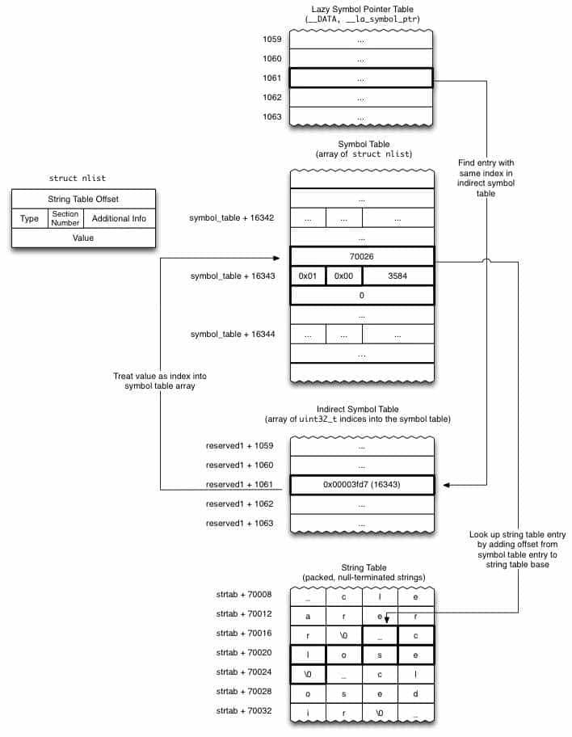

fishhook 原理及其源码阅读
通过前面的两篇[1]文章，大概上弄清楚了 Mach-O 的基本结构和加载过程，接下来将尽可能详细地分析 [fishhook] 源码。
fishhook
fishhook 是一个非常简单的库，在 iOS 系统的模拟器或真机上，它能对 Mach-O 二进制文件动态地进行符号的重绑定，可以用来跟踪或调试来自系统库里面的函数运行情况。对于来自动态库里面的函数，Mach-O 二进制中只是在运行时将其真实地址链接进来，fishhook 利用这个链接机制进行工作，所以它只能对动态链接的函数才起作用，对在编译时就确定了函数地址的函数不起作用。
fishhook 原理
GitHub 官方页面的这张图可以概括原理：

官方文档的翻译：
dyld通过更新 Mach-O 二进制文件 __DATA 段特定 Section 中的指针来绑定懒加载符号和非懒加载符号。 fishhook 通过确定rebind_symbols中的每个符号名字的更新位置来重新绑定这些符号，然后写回相应的替换符号。对于给定的 image，
__DATA段包含的可能与动态符号绑定相关的 Setcion 有两个：__nl_symbol_ptr和__la_symbol_ptr。__nl_symbol_ptr是指向非延迟绑定符号的指针数组（这些指针在加载库时就被绑定），而__la_symbol_ptr是引入函数符号的指针数组，在第一次被调用时这些数组通常填充着名为dyld_stub_binder的程序（也可以告诉dyld在启动时就绑定这些符号）。为了在这些 Section 之中找到与特定位置相对应的符号名称，我们必须跳跃在一些中间层上间接寻址。对于这两个关联的 Section ，Section 标题（定义自<mach-o/loader.h>中 section struct）提供了到间接符号表（Indirect Symbol）的偏移量（在reserved1字段中）。间接符号表位于二进制文件的__LINKEDIT段中，它只是符号表中的索引数组，其索引顺序与非懒加载和懒加载符号数组中的符号顺序相同。因此，对于给定的nl_symbol_ptr类型 section ，该 section 中符号表第一个地址对应索引为indirect_symbol_table[nl_symbol_ptr-> reserved1][2]。符号表本身是nlist数组（请参见<mach-o/nlist.h>），每个nlist都包含一个指向字符串表的索引，该索引位置刚好存储了nlist实际的符号名。因此，对于每个nl_symbol_ptr和la_symbol_ptr中的符号指针，我们都可以找到对应的符号，然后找到对应的字符串以与请求的符号名称进行比较，如果存在匹配项，则用replacement替换该部分的指针内容。
源码解读
我建了一个 demo 工程，加了一些便于调试的代码。fishhook 的代码非常简洁，只有两个文件，我们先看.h文件。其中包含一组宏定义:
1 | |
这是控制符号对外可见性，当使用
__attribute__((visibility("default"))) 时所修饰的符号对外默认可见，而使用 __attribute__((visibility("hidden"))) 时对外隐藏该符号。该机制是为了避免符号冲突，尤其是对于动态链接库，不必要可见的符号都应该设置为hidden。rebind_symbols1
2
3
4
5
6
7
8
9
10
11
12
13
14
15
16
17
18
19
20
21int rebind_symbols(struct rebinding rebindings[], size_t rebindings_nel) {
int retval = prepend_rebindings(&_rebindings_head, rebindings, rebindings_nel);
if (retval < 0) {
return retval;
}
if (!_rebindings_head->next) {
/**
_dyld_register_func_for_add_image 被调用时，
已经被 dyld 加载的 image 会立刻回调，
后续被 dyld 新加载的 image 也会触发回调
*/
_dyld_register_func_for_add_image(_rebind_symbols_for_image);
} else {
uint32_t c = _dyld_image_count();
for (uint32_t i = 0; i < c; i++) {
_rebind_symbols_for_image(_dyld_get_image_header(i), \
_dyld_get_image_vmaddr_slide(i));
}
}
return retval;
}首先创建了一个静态指针指向的链表数据结构，后来添加的数据会插入到头部，保证后来添加的数据优先被处理。
随后流程被转向rebind_symbols_for_image函数rebind_symbols_for_image1
2
3
4
5
6
7
8
9
10
11
12
13
14
15
16
17
18
19
20
21
22
23
24
25
26
27
28
29
30
31
32
33
34
35
36
37
38
39
40
41
42
43
44
45
46
47
48
49
50
51
52
53
54
55
56
57
58
59
60
61
62
63
64
65
66
67
68
69
70
71
72
73
74
75
76
77
78
79
80
81
82
83
84
85
86
87
88
89
90
91
92
93
94
95
96
97
98
99
100
101
102
103
104
105
106
107
108
109
110
111
112
113
114
115
116
117static void rebind_symbols_for_image(struct rebindings_entry *rebindings,
const struct mach_header *header,
intptr_t slide) {
Dl_info info;
/**
向 dyld 查询 header 指向的地址是否存在于某一个 image 里面。
如果存在，返回非 0；info 中存放具体信息
如果返回为 0 表示不存在
*/
if (dladdr(header, &info) == 0) {
return;
}
// 如果 pathname 以 /private/var 开头，可以认为就是 execute 这个 image
const char *pathname = info.dli_fname;
if (strlen(pathname) > 8) {
char subPathname[9] = {'\0'};
char target[9] = "/private";
strncpy(subPathname, pathname, 8);
if (!strcmp(subPathname, target)) {
isMainImage = true;
}
}
segment_command_t *cur_seg_cmd;
segment_command_t *linkedit_segment = NULL;
struct symtab_command* symtab_cmd = NULL;
struct dysymtab_command* dysymtab_cmd = NULL;
/* 通过遍历找到 Load Commnads 中 LC_SEGMENT_64.info（）、LC_SYMTAB(规定
了 symbol table 和 string table 在文件中的位置与大小)、LC_DYSYMTAB，
并用指针分别指向他们
*/
uintptr_t cur = (uintptr_t)header + sizeof(mach_header_t);
for (uint i = 0; i < header->ncmds; i++, cur += cur_seg_cmd->cmdsize) {
cur_seg_cmd = (segment_command_t *)cur;
if (cur_seg_cmd->cmd == LC_SEGMENT_ARCH_DEPENDENT) {
if (strcmp(cur_seg_cmd->segname, SEG_LINKEDIT) == 0) {
linkedit_segment = cur_seg_cmd;
}
} else if (cur_seg_cmd->cmd == LC_SYMTAB) {
symtab_cmd = (struct symtab_command*)cur_seg_cmd;
} else if (cur_seg_cmd->cmd == LC_DYSYMTAB) {
dysymtab_cmd = (struct dysymtab_command*)cur_seg_cmd;
}
}
if (!symtab_cmd || !dysymtab_cmd || !linkedit_segment ||
!dysymtab_cmd->nindirectsyms) {
return;
}
/* Find base symbol/string table addresses
ASLR 地址 + linkedit 描述的 segment 被加载到内存后的地址 - linkedit 在文件中的偏移 =
文件开始位置在内存中的地址（file Offset 为 0 的地方）的值
如果 16 进制查看（ p/x linkedit_base）其值，会发现和 header 指针相同
*/
uintptr_t linkedit_base = (uintptr_t)slide + linkedit_segment->vmaddr - \
linkedit_segment->fileoff;
/* 得到 LC_SYMTAB 在内存中的地址。体现了 Mach-O 的某一处相对于文件偏移的位置，
是如何对应到运行时的内存地址
symbol table 是一个 nlist_64 结构体数组，所以指向结构体数组指针
*/
nlist_t *symtab = (nlist_t *)(linkedit_base + symtab_cmd->symoff);
// strtab 以 '\0' 分割的，列出了所有可见字符串
// string table 就是 ASCII 组成的数组，所以使用 char* 描述
char *strtab = (char *)(linkedit_base + symtab_cmd->stroff);
// Get indirect symbol table (array of uint32_t indices into symbol table)
// Dynamic Symbol Table (Indirect Symbols) 在内存中的地址
uint32_t *indirect_symtab = (uint32_t *)(linkedit_base + \
dysymtab_cmd->indirectsymoff);
cur = (uintptr_t)header + sizeof(mach_header_t);
// 每遍历一个，序号 i ++，cur 指向下一个 load command 的头部
for (uint i = 0; i < header->ncmds; i++, cur += cur_seg_cmd->cmdsize) {
cur_seg_cmd = (segment_command_t *)cur;
if (cur_seg_cmd->cmd == LC_SEGMENT_ARCH_DEPENDENT) {
if (strcmp(cur_seg_cmd->segname, SEG_DATA) != 0 &&
strcmp(cur_seg_cmd->segname, SEG_DATA_CONST) != 0) {
continue;
}
/* segment.name 为 __DATA 或 __DATA_CONST，因为动态链接库的符号的 stub 就在里面指定。
__TEXT.__stubs 的这里不用管，因为当某一个延迟绑定的函数被调用时，
一定会被转 __DATA_CONST和__DATA的 __got 或 __la_symbol_ptr区域
非延迟绑定的符号(来自于 __DATA_CONST.__got) 也能被重新绑定，
因为它和延迟绑定的符号工作机制相同，只是绑定时机不同
*/
for (uint j = 0; j < cur_seg_cmd->nsects; j++) {
section_t *sect =
(section_t *)(cur + sizeof(segment_command_t)) + j;
/* 遍历 __DATA 和 __DATA_CONST 的每一个 section，
找到延迟绑定和非延迟绑定符号所在的 section，然后琢磨着偷梁换柱
*/
if ((sect->flags & SECTION_TYPE) == S_LAZY_SYMBOL_POINTERS) {
if (isMainImage) {
printf("section.name=%s,reserved1=%d\n\n",\
sect->sectname,sect->reserved1);
}
perform_rebinding_with_section(rebindings, sect, slide, \
symtab, strtab, indirect_symtab);
}
if ((sect->flags & SECTION_TYPE) == S_NON_LAZY_SYMBOL_POINTERS) {
if (isMainImage) {
printf("section.name=%s,reserved1=%d\n\n",\
sect->sectname,sect->reserved1);
}
perform_rebinding_with_section(rebindings, sect, \
slide, symtab, strtab, indirect_symtab);
}
}
}
}
}这一步是将所有
image的懒加载符号表、非懒加载符号表、字符串表、间接符号表的入口位置找到，然后准备调动perform_rebinding_with_section进行真正的绑定逻辑。
这个函数每一个image都会被调用，为了专注于当前二进制所在的image，我添加了一个静态变量辅助断点:static bool isMainImage = false;，个人认为比较难以理解的行都加上了详细的注释。perform_rebinding_with_section1
2
3
4
5
6
7
8
9
10
11
12
13
14
15
16
17
18
19
20
21
22
23
24
25
26
27
28
29
30
31
32
33
34
35
36
37
38
39
40
41
42
43
44
45
46
47
48
49
50
51
52
53
54
55
56
57
58
59
60
61
62
63
64
65
66
67
68
69
70
71
72
73
74
75
76
77
78
79
80
81
82
83
84
85
86
87
88
89
90
91
92
93
94
95
96
97
98
99
100
101
102
103
104static void perform_rebinding_with_section(struct rebindings_entry *rebindings,
section_t *section,
intptr_t slide,
nlist_t *symtab,
char *strtab,
uint32_t *indirect_symtab) {
const bool isDataConst = strcmp(section->segname, SEG_DATA_CONST) == 0;
/* __DATA 和 __DATA_CONST 的延迟和非延迟绑定 section 的 reserved1 字段
section.name = __got, reserved1=31; section.name = __la_symbol_ptr, reserved1 = 34
通过在间接跳转表中偏移 section->reserved1，找到当前 section （可能为__got 或
__la_symbol_ptr）第一个符号表在间接跳转表中的位置
*/
uint32_t *indirect_symbol_indices = indirect_symtab + section->reserved1;
if (isMainImage) {// FISHIHOOkDEMO
printf("Got U!\n");
}
/** 1. 二级指针，指向当前 section 的头部
2. 当前 Section 是 __DATA 类型 Section，懒加载（或非懒加载）符号表里面的每一项的值是一个地址，
虽然初始值可能不相同，但最终的预期都是指向各自的真实函数的地址
3. 对于我们来说，需要修改的是指针指向的指针的值，所以此处直接申明为二级指针
*/
void **indirect_symbol_bindings = (void **)((uintptr_t)slide + section->addr);
vm_prot_t oldProtection = VM_PROT_READ;
if (isDataConst) {
/* 对于 __DATA_CONST，需要修改内存权限，暂时修改为可读可写，
以便接下来能够将 replacement 地址写入
*/
oldProtection = get_protection(rebindings);
mprotect(indirect_symbol_bindings, section->size, PROT_READ | PROT_WRITE);
}
/* 名字为 __got 或 __la_symbol_ptr 的 Section 就是存放一系列函数地址的列表，
所以将 sizeof(void *) 作为循环步进长度
*/
for (uint i = 0; i < section->size / sizeof(void *); i++) {
/* 相当于是取 indirect_symbol_indices 指向地址偏移 (sizeof(uint32_t *) * i) 处的值，
这是一个索引，可以在 symbol table 中找到具体的 symbol 结构（nlist_64）
*/
uint32_t symtab_index = indirect_symbol_indices[i];
if (symtab_index == INDIRECT_SYMBOL_ABS || \
symtab_index == INDIRECT_SYMBOL_LOCAL ||
symtab_index == (INDIRECT_SYMBOL_LOCAL | INDIRECT_SYMBOL_ABS)) {
continue;
}
/* 在 symbol table （nlist_64） 中得到当前符号在字符串表中的偏移，
并在字符串表中取到当前符号的名字（字符串）
*/
uint32_t strtab_offset = symtab[symtab_index].n_un.n_strx;
char *symbol_name = strtab + strtab_offset;
/* 字符串长度为 0 或者为 1 时，第 0 或第 1 个位置肯定是 '\0'，
任意值与它 && 运算时一定为 false。为 false 时即字符串说明长度小于等于 1
*/
bool symbol_name_longer_than_1 = symbol_name[0] && symbol_name[1];
struct rebindings_entry *cur = rebindings;
while (cur) { // 典型的链表遍历
for (uint j = 0; j < cur->rebindings_nel; j++) {
/* 比较当前遍历的字符串是否和待替换的相同
`[]`的优先级高于`&`，所以 `&symbol_name[1]` 取的是去掉
第一个字符后的字符串（字符串总是以'\0'为终止条件），即去掉编译器在函数前面添加的"_"
这也是为什么要求字符串长度大于 1 的原因
*/
if (symbol_name_longer_than_1 &&
strcmp(&symbol_name[1], cur->rebindings[j].name) == 0) {
if (cur->rebindings[j].replaced != NULL &&
indirect_symbol_bindings[i] != cur->rebindings[j].replacement) {
/* indirect_symbol_bindings[i] 存放的是系统原来的实现函数的指针：
对于懒加载符号，如果在这之前已经被绑定过，
indirect_symbol_bindings[i] 就是该符号真实地址；
如果没有被绑定过，
indirect_symbol_bindings[i] 就指向 __TEXT.__stub_helper 中
不管怎么样，系统原来的实现地址（也可能是间接地址），
会被存入 replaced 指针指向的空间中
replaced 是一个二级指针，值为二级指针的地址，初始时指向的内容为 0x00
二级指针的目的：为了和 indirect_symbol_bindings 的结构保持一致，
以便在首次调用时能够借助 __TEXT.__stub_helper 将符号的真实地址写回来
*/
*(cur->rebindings[j].replaced) = indirect_symbol_bindings[i];
}
/* 新的函数地址写入到了当前 Section 的符号表项目中，
以后在调用时读取符号表的此项目 Data 时，读取的就是 replacement 的地址
*/
indirect_symbol_bindings[i] = cur->rebindings[j].replacement;
// 如果找到了，对符号表 Section 中的下一个符号进行检查
goto symbol_loop;
}
}
cur = cur->next;
}
symbol_loop:;
}
if (isDataConst) {
// __DATA_CONST 类型的 Section 内存写入完成后，恢复成原来的内存权限
int protection = 0;
if (oldProtection & VM_PROT_READ) {
protection |= PROT_READ;
}
if (oldProtection & VM_PROT_WRITE) {
protection |= PROT_WRITE;
}
if (oldProtection & VM_PROT_EXECUTE) {
protection |= PROT_EXEC;
}
mprotect(indirect_symbol_bindings, section->size, protection);
}
}这一步是核心逻辑，我带着“为什么”去理解每一行，并做了详细的记录，其中有很多涉及到
c语言中指针类型的运用，也有和 Mach-O 中各数据结构相关的，需要对照着头文件去一步一步理解。当然，如有理解不到位的，还是非常希望得到大佬的指正。
感悟
这是 Mach-O 系列文章的第三篇。Mach-O 连接着应用程序和操作系统，通过它能够熟悉操作系统对应用程序的加载和处理过程，而在这些过程中往往隐藏着魔法，比如目前热门的“二进制重排提升启动速度”、“通过 zsource 保留二进制组件化后源码调试能力”、“符号表被 strip 后的重建”、“ALSR 与 PIC、PIE的原理与应用”、“解析崩溃日志 .crash” 等技术点和其解决方案，如果我们熟悉了底层的原理后，在回头去看这些技术方案肯定会事半功倍，甚至能够提出更好的解决方案。
在这之前，我对汇编一窍不通，而且看到汇编就想跳过，但是在前段的学习过程中，我尝试让自己热爱汇编，对照 MachOView 逐行单步调试去理解符号的绑定流程，不懂的就去查，慢慢地，我能看懂了一些汇编代码，体会到了汇编代码操作地址和数据的魅力，也终于弄懂了符号绑定的流程。到后来，我对汇编没有了抗拒感，虽然也还是有很多看不懂，但心态变得积极，非常渴望去弄清楚。我相信一件事情，只要“热爱”了、动手去做了，肯定就能成！
- Mach-O 文件结构详解和Mach-O 加载时的动态链接 ↩
indirect_symbol_table[nl_symbol_ptr->reserved1]等同于indirect_symtab + section->reserved1，都是说明当前 section 第一个符号在 Indirect Symbol 中的位置 ↩
本博客所有文章除特别声明外，均采用 CC BY-SA 4.0 协议 ，转载请注明出处！